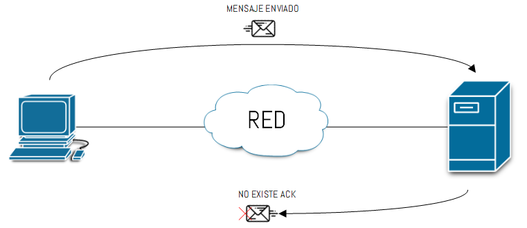
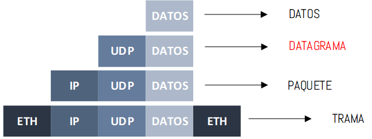
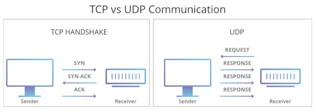

¿QUÉ ES UDP?
El protocolo de datagramas de usuario, abreviado como UDP, es un protocolo que permite la transmisión sin
conexión a datagramas en redes basadas en IP. Para obetener los servicios deseados en los hosts de destino,
se basa en los puertos que están listados como uno de los campos principales en la cabecera UDP. Como muchos
otros protocolos de red, UDP pertenece a la familia de protocolos de Internet, por lo que debe clasificarse
en el nivel de transporte y, en consecuencia, se encuentra en una capa intermedia entre la capa de red y la
capa de aplicación.
¡Nota!
El protocolo UDP es una alternativa directa al protocolo más utilizado, el TCP, aunque ambos se diferencian
sobre todo en un punto:mientras que la transmisión en el protocolo TCP tiene lugar una vez se ha producido
el enlace obligatorio de 3 vías (con acuse de recibo mutuo entre el emisor y el receptor, incluida la
sesión de comunicación), el protocolo UDP no utiliza este procedimiento con el fin de mantener el tiempo de
transmisión lo mas bajo posible.
Mediante el protocolo de datagramas de usuario, una aplicación puede enviar información muy rápidamente, ya
que no es necesario establecer una conexión con el receptor ni esperar una respuesta. Sin embargo, no hay
garantía de que los paquetes vayan a llegar completos y respetando el orden en el que fueron enviados. Además,
este protocolo no ofrece ninguna protección frente a la alteración o acceso por parte de terceros. Sin embargo, el
UDP puede añadir opcionalmente una suma de verificación (que es obligatoria en IPv6) que permite detectar los
paquetes defectuosos.
Definición
El UDP (User datagram protocol) es un protocolo sin conexión de la familia de protocolos de Internet que
funciona en la capa de transporte y fue especificado en 1980 en la RFC (Request for Comments) 768. El
protocolo UDP se utiliza para transmitir datagramas de form rápida en redes IP y funciona como una
alternativa sencilla y sin retardos del protocolo TCP. Se usa principalmente para consultas DNS, conexiones
VPN y para el streaming de audio y vídeo.
CARACTERÍSTICAS UDP
·Protocolo Best-efford
UDP es un protocolo no confiable, debido a que no existen reconocimientos de los datos que estamos enviado al
destino a comparación de TCP. Cuando una computadora envía un paquete al servidor como vemos en la imagen 4, el
servidor no responde con un reconocimiento de que efectivamente recibió el paquete. Se pueden enviar 5 paquetes
diferentes y no se obtendrá ningún reconocimiento de esos 5 paquetes, por lo tanto, no sabes si llegaron a su
destino y a UDP no le interesa si se pierden o no y por supuesto no los envía nuevamente.

¿Qué hacemos en el caso que se pierda un paquete en la red?, pues la tarea recae sobre el protocolo de la capa de
aplicación y sus mecanismos para lidiar con las pérdidas de datos.
·Encapsulación UDP
La información que se genera en la capa de aplicación, es entregada en bloques discretos de bytes al protocolo de la
capa de transporte, UDP encapsula esos datos (bytes) recibidos con su propio header, sin embargo cuando se utiliza
UDP ya no se denominan segmentos a comparación de TCP, ahora se denominan datagramas. Los datagramas son
enviados a la capa de red, la capa de red añade su header y los datagramas se convierten en paquetes. Finalmente
los paquetes son enviados a la capa de enlace de datos donde se convierten en tramas.

·Entrega de Datagramas
Cuando los datagramas son enviados al destino, el protocolo UDP en el dispositivo de destino no los ordena, es decir
que los datos contenidos en los datagramas son entregados a la aplicación en el orden que llegan. Es tarea de la
aplicación ordenar los datos si así lo requiere.
·Connectionless y control de flujo y congestión
UDP es un protocolo conectionless, esto significa que no hay un establecimiento de conexión con el dispositivo de
destino, no existe el proceso 3-WAY HANDSHAKE que existe en TCP, ni tampoco existe un cierre de la sesión. Por otro
lado ningún dispositivo toma acción respecto a la congestión o al control de flujo que se deba realizar en la red.
¿Como se estructura la cabecera UDP?
Como es tipico en todos los protocolos, los paquetes UDP consisten en una cabecera
(header) y los datos reales del usuario. La cabecera UDP contiene toda informacion
necesaria para la transmision de datos utilizando el protocolo de transporte y hace
que un paquete UDP se pueda identificar como tal. La cabecera UDP consta de 4
campos y esta dividia en 2 bloques de 23 bits con la siguiente estructura:
| Bits 0-15 | Bits 16-31 | |
|---|---|---|
| cero | Puerto de origen | Puerto de destino |
| 32 | Longitud del mensaje | Suma de verificacion |
Los primeros 16 bits de la cabecera identifican el puerto de origen desde el que se
ha enviado un datagrama correcto. El receptor necesita esta informacion para poder
responder al paquete. Ya que UDP funciona sin conexion y basicamente no requiere
ninguna comunicacion entre el emisor y el receptor, el campo de puerto de origen es
opcional. En caso de no ser utilizado, el puerto de origen debe ser puestoa cero.
En el siguiente campo se especifica el puerto de destino, es decir, se indica el
servicio solicitado. Esta información es obligatoria, al contrario que el puerto de
origen, porque si no, no sería posible asignar correctamente el datagrama.
!Nota
Lo siguiente es aplicable a los campos de puerto: si se trata de una aplicación del
lado del cliente, es probable que el número de puerto asignado sea volátil. Si el
puerto ha sido asignado a un proceso del servidor, el número de puerto será
normalmente uno de los puertos conocidos (well¯known ports).
La cabecera UDP se completa con la checksum o suma de comprobación, que se utiliza
para detectar errores durante la transmisión. De esta manera, se puede detectar si
los datos han sufrido alguna alteración en el camino. No obstante, los paquetes
detectados se descartan y no se cursa una nueva solicitud. Para generar la suma, se
utilizan partes.
- De la cabecera UDP
- De los datos del usuario
- De la pseudocabecera
¿Que aplicaciones utilizan el protocolo UDP?
El protocolo de datagramas de usuario, debido a su estructura mínima y a su falta
de mecanismos que garanticen una transmisión completa y exitosa, no puede
utilizarse como protocolo de transporte universal. En realidad, fue diseñado desde el
principio pensando en aplicaciones que (todavía) no requieren un servicio de transmisión
fiable. Por ello, el campo de aplicación del protocolo UDP es limitado, aunque
es necesario subrayar su enorme valor, como demuestran los siguientes tipos de aplicación
del mismo:
-
Aplicaciones basadas en best effort delivery: el
escenario tĩpico en el que encontramos
el protocolo UDP son aplicaciones basadas en la entrega de mejor esfuerzo. -
Aplicaciones ligeras: la baja sobrecarga del protocolo
de transporte proporciona un
soporte óptimo para las aplicaciones que tengan un diseño muy sencillo. -
Aplicaciones con mecanismos propios para una transmisión
fiable:
el UDP puede
resultar interesante para aquellas aplicaciones que necesitan un intercambio
de información fiable, pero que dependen de sus propios mecanismos a la hora
de dar respuesta a los datagramas. -
Aplicaciones multicast: mientras que los protocolos de
transporte confiables como
el protocolo TCP se limitan a la comunicación de extremo a extremo, el protocolo
UDP también soporta conexiones de multidifusión IP. -
Aplicaciones en tiempo real (real time
applications):
por último, el UDP también es
adecuado como protocolo de transporte para servicios que presentan requisitos
de comunicación en como las transmisiones de audio o vídeo.
TCP versus UDP
El UDP es más rápido pero menos fiable que el TCP, otro protocolo de
transporte habitual. En una comunicación TCP, los dos ordenadores
comienzan estableciendo una conexión mediante un proceso automatizado
llamado "protocolo de enlace". Un ordenador no transferirá realmente
paquetes de datos al otro hasta que no se haya completado el protocolo
de enlace.
Las comunicaciones UDP no pasan por este proceso. En su lugar, un
ordenador simplemente puede empezar a enviar datos al otro:
